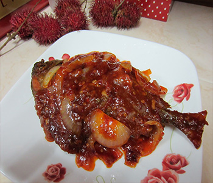

Bahan:
- 1 kg ikan bawal (3 ekor)
- 12 cabe keriting merah
- 4 rawit
- 3 siung bawang putih
- 4 siung bawang merah
- Gula pasir
- Garam
- Penyedap
- 1 sdk mkn perasan lemon
- 2 lembar daun jeruk
Cara Membuat:
- Potong ikan bawal jadi dua.... lumuri dg garam dan perasan lemon.... biarkan sebentar... goreng dg minyak panas hingga matang.. sisihkan
- Buat sambal.... rebus cabe sampai empuk.. tumbuk kasar dengan garam dan bawang putih.... siaihkan.
- Iris tipis bawang merah... Tumis hingga harum... Masukkan cabe tumbuk... aduk rata... masukkan.. tomat yg telah dpotong sesuai selera... perasan lemon.. daun jeruk dan gula.... Tambahkan penyedap... cek rasa...
- Tata ikan di wadah.... guyur dengan sambel.....
- Sajikan hangat dengan nasi putih😋😋😋